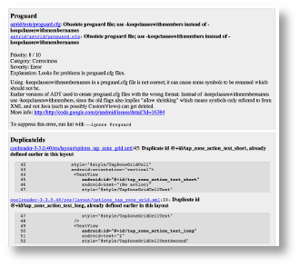

Android Lint是在ADT 16（和 Tools 16）引入的一个新工具，可以扫描Android 项目源码中潜在的bug 。它可同时作为一个命令行工具，以及集成在Eclipse（如下所述），和IntelliJ（详细信息）中。这个架构是有意独立于IDE的，因此它有希望与其他的IDE，其他的构建工具和持续集成系统集成。以下是它进行扫描的一些错误类型的例子：
以及其他更多的问题。 请参阅此文档以了解当前 lint 检查的问题的完整列表。 有关如何取消显示（suppress）特定的 lint 警告信息，请参阅取消警告显示的文档. 如果你对编写自定义的lint 检查有兴趣，可以参阅编写新的 Lint 检查和编写自定义 Lint 规则。 命令行用法在 SDK 工具目录有一个命令行工具叫做 如果在你的path上已经配置了 SDK 的lint。tools/ 目录，您可以使用“lint”来调用它。只需指向一个特定的 Android 项目目录。你也可以指向一个随机的目录，（如果它不是一个 Android 的项目）将以递归方式搜索，并将检查该目录下的所有项目。（你还可以指定通过空格分隔的多个项目）。$ lint /src/astrid/Scanning GreenDroid-GoogleAPIs: ..Scanning stream: ...Scanning api: ...........................Scanning GDCatalog: .......................Scanning GreenDroid: ...........................................................Scanning tests: ...Scanning filters: ....Scanning tests: .....Scanning astrid: ....................................................................................................................................................Scanning simple: .......api/res/values-ca: Error: Locale ca is missing translations for: sync_SPr_bgwifi_key, sync_SPr_forget_key, sync_SPr_interval_values, sync_SPr_logged_in_prefix... (2 more) [MissingTranslation]astrid/res/values-ca: Error: Locale ca is missing translations for: DLG_cancel, DLG_dismiss, DLG_ok, EPr_deactivated... (117 more) [MissingTranslation]api/res/values-cs: Error: Locale cs is missing translations for: sync_SPr_bgwifi_key, sync_SPr_forget_key, sync_SPr_interval_values, sync_SPr_logged_in_prefix... (2 more) [MissingTranslation](many lines omitted)43 errors, 466 warnings禁用检查每种错误类型的“ID”都显示在错误消息后面的括号中，如上面的“MissingTranslation”。 您可以通过添加 --disable argument，禁用一个特定的检查，或一列的检查，例如： $ lint --disable MissingTranslation,UnusedIds,Usability:Icons /src/astrid/注意，您也可以列出类别，比如上面的“Usability:Icons”，就是用性类别的图标子类别。 有些检查默认情况下牌禁用状态。可以通过添加 --enable标志启用它们。最后，您可以通过 --check标志指定运行哪些确切的检查。这让你可以在代码库中查找一个具体的问题，比如： $ lint --check MissingPrefix /src/astrid/如果要找出哪个 id 和类别是可用的，请运行 $ lint --listValid issue categories: Correctness Security Performance Usability Usability:Icons Accessibility InternationalizationValid issue id's:"ContentDescription": Ensures that image widgets provide a contentDescription"DuplicateIds": Checks for duplicate ids within a single layout"StateListReachable": Looks for unreachable states in a <selector>"InefficientWeight": Looks for inefficient weight declarations in LinearLayouts"ScrollViewSize": Checks that ScrollViews use wrap_content in scrolling dimension"MergeRootFrame": Checks whether a root <FrameLayout> can be replaced with a <merge> tag...使用 --show命令加上 id 列表或类别 （或不带参数查看全部）可以获取指定的问题的解释：$ lint --show MissingPrefixMissingPrefix-------------Summary: Detect XML attributes not using the Android namespacePriority: 8 / 10Severity: WarningCategory: CorrectnessMost Android views have attributes in the Android namespace. Whenreferencing these attributes you *must* include the namespace prefix,or your attribute will be interpreted by aapt as just a customattribute.HTML 报表这个命令行工具还可以生成HTML报告。这相比普通的 lint 输出有一定的优势：
--html 文件名 作为参数：$ lint --html /tmp/report.html默认情况下，链接到源代码文件将只使用本地的 file:// 路径资源。您可以通过 --url 选项把 URL 重新映射向不同的前缀。例如： $ lint --html /tmp/report.html --url /src/MyProj=http://buildserver/src/MyProj其他命令行选项注： 此文档是在 lint 首次发布时编写的。Eclipse 集成已经有了显著的提高。欲了解更多最新的详细信息，请参阅新的Eclipse Lint UI（New Eclipse Lint UI）， Lint 在 ADT 16及更高的版本上集成。该集成 提供了上述 Lint 命令行版本的几个功能：
Lint 自动化在以下情况时 lint 会自动运行：
Lint 窗口要在一个项目上运行 Lint，请在包浏览器中选择项目，然后单击 Lint 工具栏上的功能（见右边的图片）。 或者您可以在项目上右击，在 Android Tools 子菜单中，有一个“运行 Lint”的功能。它将打开一个 Lint 窗口，其中包含各种错误。选择一个错误将会在右侧的文本区显示相关联的解释。 如果 lint 视图上有任何错误，你可以在错误上双击，来跳转到相关联的源代码位置。每个警告图标将显示其严重程度，并具对于已修复的警告（见下一节）会有一个小灯泡重叠。 该窗口也有一个操作栏（在右上角），它可以让你
快速修复许多 lint 警告有自动修复功能。例如，各种 layoutopt 修复的替换提示 （如替换 wrap_content 为 0dp)。
取消错误警告的显示从编辑器快速修复菜单中，你也可以选择
这些选择都存储项目里名为 lint.xml的文件中，可以通过命令行工具读取。因此，您可以在 UI 中忽略警告，并在你的源项目关联的lint.xml文件中进行记录，其他运行着的lint将不会看到你已经忽略的警告（大概是因为已经手动验证了）。选项要编辑用于所有项目备用选项的 lint 全局选项，可以调用正常的 Eclipse 选项对话框，并选择 Android > Lint Options： 如果你选择了一个问题，您可以在右下角的下拉列表中编辑其严重程度。这使您可以把某些问题指定为 Error（即会在启用了靠近顶部的对话框中的选项的情况下中止导出 APK）。 要完全关闭问题检查，请选择“Ignore”作为严重程度。 请注意此操作不会编辑每个项目的 lint 设置 。打开项目设置对话框 （右击该项目），你将在这里找到 Android Lint 的属性页。在选项对话框中手动严重性编辑也会与取消显示的错误一起被记录在 lint.xml文件中，所以您的团队中的其他人将会获得你对这个项目编辑的相同的严重性设置。 |
提示>

{kind=link}
{kind=link}
{kind=link}
{kind=link}
{kind=link}
{kind=link}